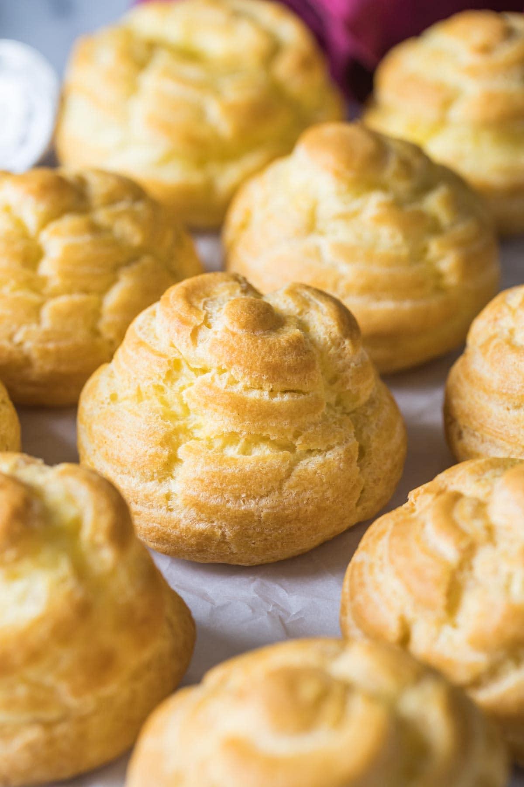

Choux Pastry

Description
Choux pastry is an easy, low cost way of making a very versatile base for many recipes, both salty and sweet.
Ingredients
- Water - 30g
- Butter - 60g
- Salt - tbsp
- Flour - 30g
- Eggs - 1
Steps
- Melt the butter with the water and salt in a pot. Bring to boil.
- Remove from the stove and add the sifted flour all at once. Stir with a wooden spoon.
- Put back on the stove to dry out the water. It should be ready when a white layer forms on the walls of the pot and the dough detaches easily from them.
- Remove from the stove, let it cool down and add the egg. If you're using more ingredients than this recipe suggest, remember to add one egg at a time.
- Stir until the dough is smooth and homogeneous.
- Put on a baking sheet in the desired form (beignet, vol-au-vent, etc.) and put in the pre-heated oven at 180°C for about 25 minutes, until it starts browning.
- Turn off the oven, slightly open the door and let the choux inside for about 10 minutes to dry.